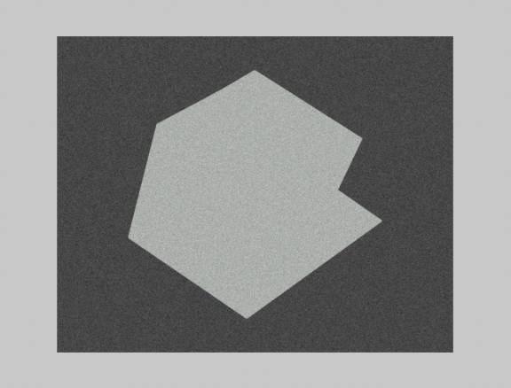

Goal: To segment an object from the background
using thresholding.
I implemented the following
algorithm in matlab. (See Example
10.10) Guess the threshold. Segment
the
image using that threshold. Compute the
average intensity of each threshold image.
Set T=1/2*(avg1+avg2).
Repeat
segmentation and averaging until T converges.
In the example below, I took the average (107.5) of the
image
intensities for the initial guess because the object takes up a considerable
portion of the image space. The
algorithm
completed in 3 iterations (with T=127.0).
For this example, it did an excellent job; although, this does
not
appear to be a very difficult image to segment.
A) Original image.
B) Segmented image.
